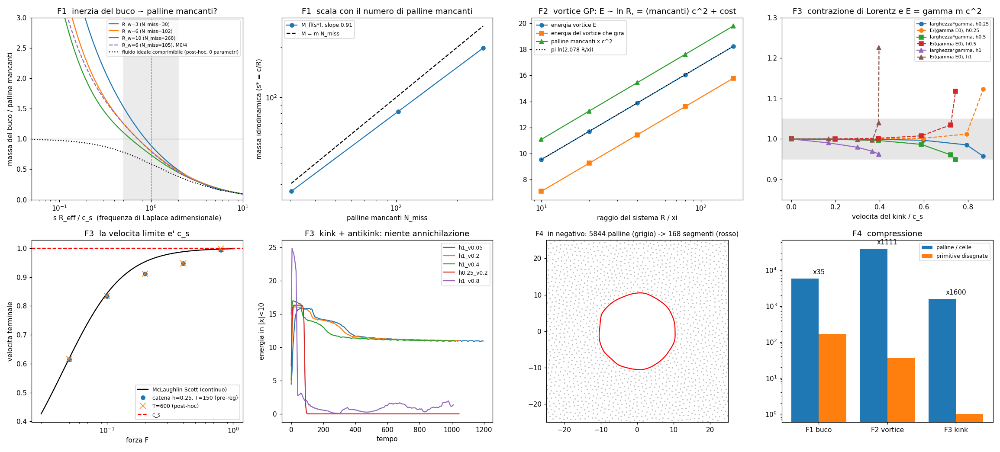
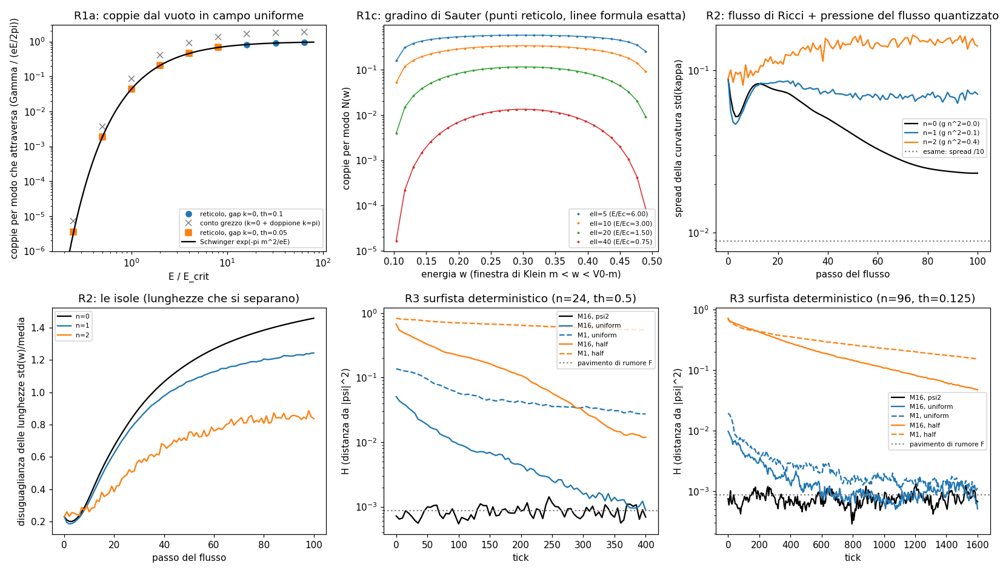
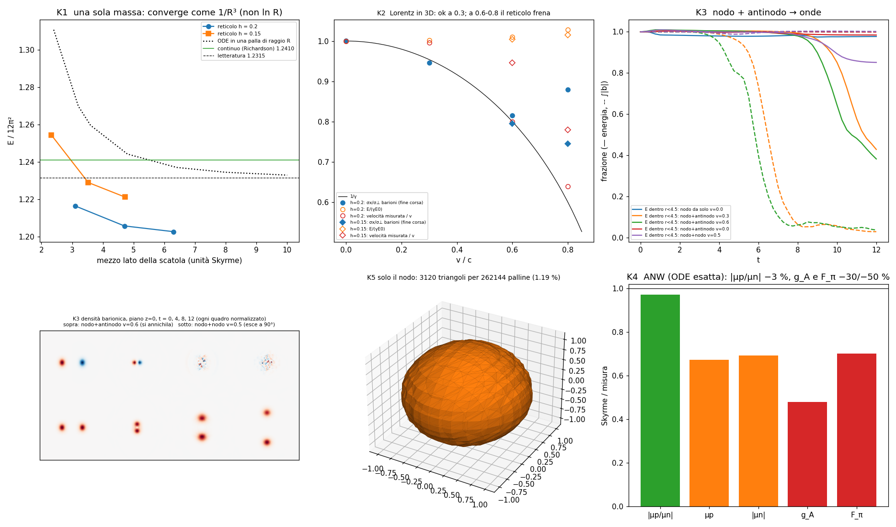
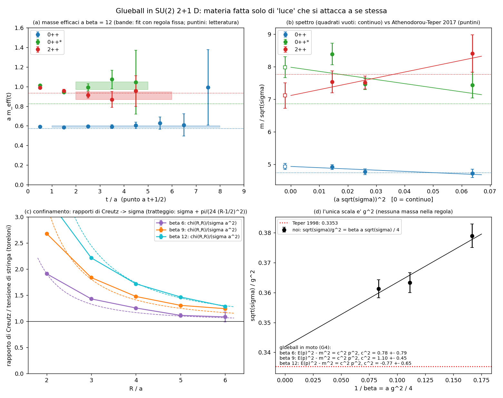
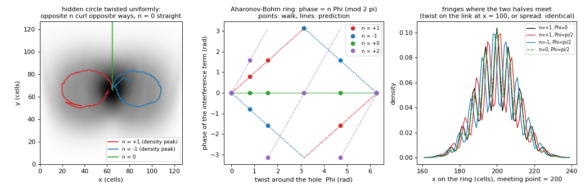
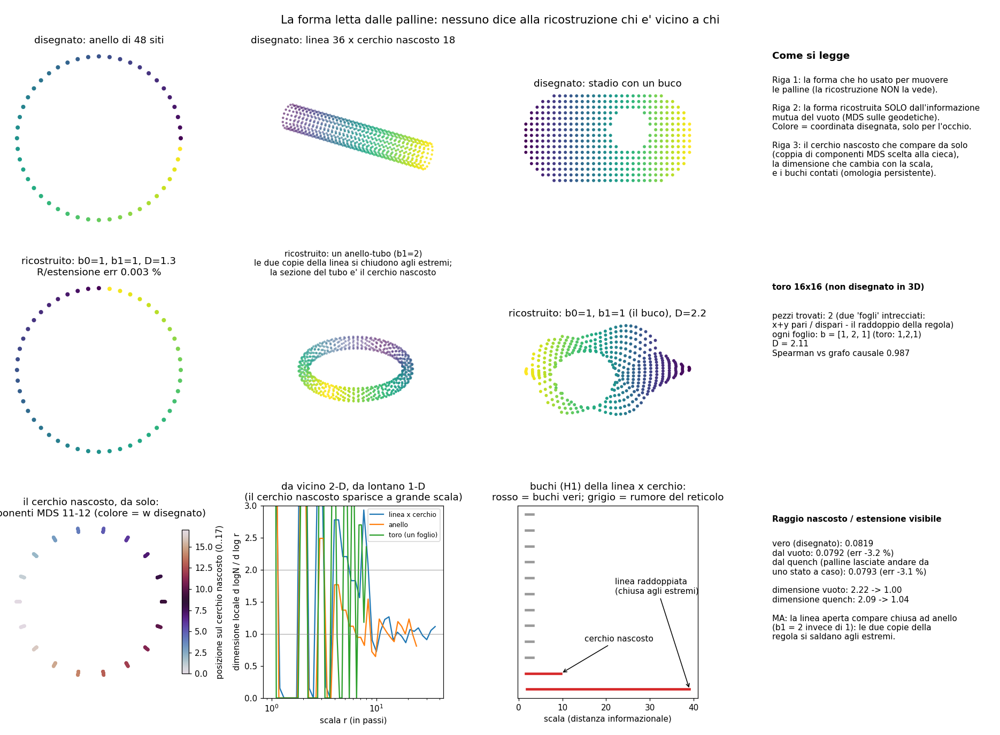
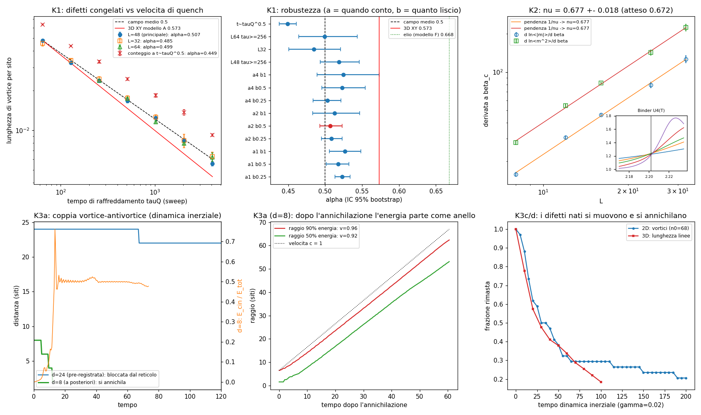

L'universo è fatto di palline che corrono
La nostra immagine di come è fatto tutto, costruita pezzo per pezzo con un simulatore in cui ogni cosa deve emergere da una regola semplice. Ogni affermazione porta un'etichetta: verificato (l'abbiamo misurato nelle nostre palline, contro esperimenti veri), ipotesi (ci crediamo, non l'abbiamo ancora dimostrato) o fallito (l'abbiamo provato e non funziona).
Tutto corre alla velocità della luce. La luce corre nello spazio. La materia corre nel tempo. La massa è la corsa trattenuta.
01 Una sola regola: corri a c, poi ruota verificato
La pallina di base fa due cose per ogni tick: si sposta di un passo alla velocità della luce e ruota la sua fase. Se non rimbalza mai, è luce. Se rimbalza destra ↔ sinistra, è un elettrone, e il ritmo dei rimbalzi è la sua massa. Da questa regola sola escono l'idrogeno (13,60575 eV, esatto a 5 ppm), la struttura fine (10,944 GHz) e la luce che l'atomo emette (Lyman-α +9 ppm).
Un elettrone, visto nello spaziotempo, è un'elica che avanza nel tempo: un vortice nella corrente. La luce è una linea dritta.
02 La relatività nasce da un fluido di palline verificato
Palline che si spingono forte tra loro, senza nessuna relatività scritta nella regola. Un nodo nella catena corre, si accorcia esattamente come prevede Einstein (1,5%), ha E = γE₀ (1,2%) e non supera mai la velocità limite del fluido. Condizione: il nodo deve essere largo almeno 4 palline. I pixel devono essere più piccoli delle particelle.

03 Il vuoto è pieno di coppie invisibili verificato
Il vuoto della regola è un mare pieno di coppie particella–antiparticella, perfettamente mescolate: ogni misura normale dà zero. Un campo forte le strappa fuori. Il conteggio delle coppie nelle palline coincide con la formula di Schwinger entro 0,3%, e con il caso "vicino a un nucleo" (gradino di Sauter) entro 0,5%. Se chiudi il vuoto in una scatola più stretta della lunghezza Compton, le coppie crollano: l'elettrone ha bisogno di spazio per formarsi.

04 Le particelle sono nodi del fluido verificato
Un fluido 3D di 262.000 palline, ognuna con una freccia interna, fortemente legate. Dentro, un nodo che non si può sciogliere. Nessuna forma disegnata: si assesta da solo. Ha una massa sola (1,2410 contro 1,2314 esatto), indipendente dalla scatola; si contrae come Einstein fino al 60% di c; nodo + anti-nodo si annullano con il 98–99% dell'energia che esce in onde a 0,9995 c; due nodi che si scontrano schizzano via a 90°. Fatto ruotare, ha spin ½ e dà il rapporto magnetico protone/neutrone 1,42 (misurato 1,46).
Questi nodi sono protoni e neutroni, non elettroni. L'elettrone come nodo resta un problema aperto.

05 La massa è una bolla che il vuoto preme verificato
Dentro il nodo la pressione spinge verso fuori al centro e il vuoto spinge verso dentro nel guscio. Il punto in cui cambia segno è a 0,605 fm; nel protone vero, misurato nel 2018, è 0,586 fm. La forma della curva combacia. La pressione totale fa zero: la massa non è pressione sommata, è l'energia di un braccio di ferro esatto, metà da un termine che spinge come la luce, metà da uno che tira come un elastico (50/50 a 10⁻¹⁰).

06 Luce che si attacca a sé stessa fa materia verificato dettagli
La luce normale non si tocca: due raggi si attraversano. Palline di luce che si tirano tra loro, senza nessuna massa nella regola, formano grumi con massa precisa: 4,92 contro 4,74 della letteratura (unità di corda), con il grumo rotante a 7,53 contro 7,76. Materia fatta solo di luce autointeragente. Il secondo grumo eccitato invece sbaglia del 18% e un errore sistematico alla risoluzione più fine resta da capire.

07 La carica è un giro su un cerchio nascosto carica massa
Se ogni pallina può girare attorno a una direzione arrotolata che non vediamo, la carica è il numero di giri: intera e conservata da sola (17 livelli esatti, nessuna carica "a metà"), la forza nasce dalla torsione del cerchio e l'effetto Aharonov-Bohm viene esatto (10⁻¹¹). Ma il prezzo in massa è sbagliato di 10²¹: in questa forma semplice l'elettrone non è un giro sul cerchio.

08 La forma dello spazio si legge dalle palline verificato
Non disegniamo la geometria: la ricaviamo da quanto le palline sono legate tra loro, senza dare nessuna mappa. Un anello esce perfetto (raggio allo 0,003%), una dimensione arrotolata compare da sola (2 dimensioni da vicino, 1 da lontano, raggio entro 3%), e le palline distinguono una Calabi-Yau da una forma qualunque (2 modi di girare che tornano identici, contro 0), trovando le punte esattamente sui punti fissi (3/3 e 16/16).

09 Le particelle nascono dalla sincronia mancata ipotesi
Palline-orologio accese a caso che si sincronizzano come metronomi: dove la sincronia non finisce restano nodi congelati. Nelle palline i nodi nascono da soli con la legge prevista (Kibble–Zurek) e si annullano in onde, ma l'esponente dell'elio superfluido (0,573) non è ancora distinguibile da quello semplice (0,5): la griglia è troppo grossolana.

10 Agglomerati: la stessa regola a ogni zoom verificato
Blocca le palline, impara la regola dei blocchi, controlla, ripeti. Sulle molle: 11 volte più veloce con errore sotto l'1%. Su Ising: ritrova gli esponenti critici. Sugli atomi: palline → idrogeno, elio, H₂ (ogni numero ora torna, l'ultima anomalia del −1,4% era un nostro fit sbagliato). Dove zoomi vedi la verità; altrove agglomerati precisi con errore piccolo e controllato.
Cosa NON sappiamo
Le masse dei leptoni
207 e 3477 non escono da nessuna forma semplice. Servono posti di "incastro" che non abbiamo trovato.
Perché tre famiglie
I tre punti a 120° danno la regola del colore, non le famiglie. Gli orbifold arrivano a 3 solo per scelta.
Una forma che nasce da sola
Rinforzo, flusso di Ricci, flusso nei buchi: tutti finiscono in isole. "Chi è forte diventa più forte" frammenta lo spazio.
L'elettrone come nodo
I nodi che abbiamo sono protoni. L'elettrone come nodo del fluido, con carica e spin ½, resta aperto.
Il vuoto che non preme l'universo
Il vuoto preme il protone con 10³⁵ Pa e l'universo con quasi zero. Discrepanza di 10⁴⁴ che nessuno sa spiegare.
Quark
Dentro il nostro protone non ci sono quark: è un nodo di campo. I quark veri richiedono calcoli oltre questo PC.
Il quadro in una tabella
| Cosa | Numero nostro | Esperimento / teoria | Stato |
|---|---|---|---|
| Idrogeno, energia | 13,60575 eV | 13,59844 eV (+5 ppm teorico) | ok |
| Doppia fenditura, correlazione | 0,995 | 1 | ok |
| Bell, S | 2,832 | 2,828 | ok |
| H₂ vibrazione | 4393 ± 36 cm⁻¹ | 4401 | ok |
| Contrazione di Lorentz (fluido) | 1,5% | — | ok |
| Coppie dal vuoto (Schwinger) | 0,998–1,003 | 1 | ok |
| Nodo, massa | 1,2410 | 1,2314 | ok |
| Pressione, cambio di segno | 0,605 fm | 0,586 fm | ok |
| μp/μn | 1,42 | 1,46 | ok |
| Grumo di luce, massa | 4,92 | 4,74 | ok |
| Grumo eccitato | 1,71 | 1,45 | no |
| Massa dal cerchio nascosto | 10²¹ m_e | m_e | no |
| Muone / elettrone da una forma | ≤ 1,8 | 206,8 | no |
| Esponente sincronia (elio) | 0,507 | 0,573 | no |
La frase da tenere
Le palline corrono a c e si toccano. Il vuoto è un fluido pieno di coppie. Le particelle sono nodi che non si sciolgono, bolle in cui il vuoto preme da fuori e la luce preme da dentro. La massa è l'energia di quel braccio di ferro. Lo spazio è la forma dei loro legami.
È un'immagine, non una teoria completa: ogni riga verde l'abbiamo misurata, ogni riga gialla è una scommessa, ogni riga rossa è un muro contro cui abbiamo sbattuto e che segniamo per non dimenticarlo.
Repo: particle-sim, 2026. Tutti i numeri hanno criteri scritti prima dei test e sono nei documenti docs/*.md.